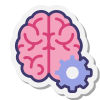

 Soft Skills
-
Patient
Rien ne sert de courir, il faut partir à point.

Capacité à prendre le temps nécessaire pour résoudre les problèmes complexes sans précipitation.
-
Autodidacte
Apprentissage autonome et passion pour l'informatique.

Capacité à apprendre de manière autonome grâce aux ressources disponibles en ligne et à l'expérimentation.
-
Calme
Réflexion méthodique même sous pression.

Capacité à rester serein et à réfléchir de manière méthodique dans les situations stressantes.
 Compétences Transversales
Compétences Transversales
-
Résolution de Problèmes
Approche méthodique et créative pour identifier et résoudre les défis techniques
-
Adaptabilité
Capacité à s'adapter rapidement aux nouvelles technologies et environnements
-
Esprit d'Équipe
Collaboration efficace et communication claire avec les collègues
-
Curiosité
Désir constant d'apprendre et d'explorer de nouvelles technologies